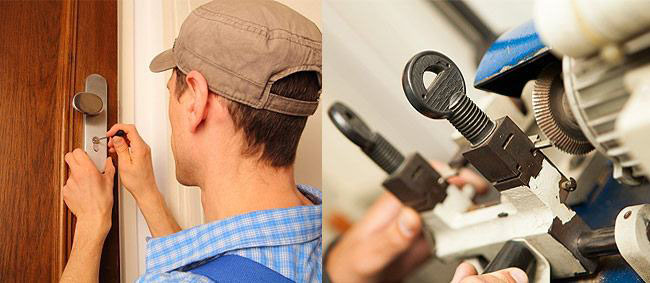

Sobre Nós
Conheça mais sobre o Chaveiro Senador localizado em Santo André
SOBRE NÓS
CHAVEIRO RESIDENCIAL E AUTOMOTIVO EM SANTO ANDRÉ
Chaveiro Senador em Santo André. Ligue Agora e chame um chaveiro profissional até você. Temos profissionais qualificados para executarem diversos tipos de serviços relacionados a chaveiro em Santo André e toda a região do ABC. Com 46 anos de experiência, oferecemos soluções completas para suas necessidades residenciais, automotivas e comerciais.
CONTATO
Visão
Ser uma empresa reconhecida pela sua excelência de desempenho, comprometida com a melhoria da qualidade de nossos serviços e com a satisfação total de nossos clientes em Santo André e região do ABC.
Valores
Nossa conduta deve refletir os mais altos padrões de ética. Nosso relacionamento com nossos clientes deve ser baseado na confiança entre as partes, transparência e compromisso com a excelência.
Serviços

Chaveiro
Com o nosso serviço de Chaveiro, garantimos uma resposta rápida e eficiente. Nossos técnicos chegarão ao seu local prontos para lidar com qualquer situação, desde perda ou roubo de chaves até chaves quebradas ou fechaduras danificadas.
Afiação
Equipe de profissionais altamente qualificados e experientes está pronta para afiar suas lâminas, garantindo que elas estejam afiadas e prontas para uso. Seja para facas de cozinha, tesouras, ferramentas de jardinagem ou lâminas industriais.

Confecção de Carimbos
Temos um conhecimento abrangente sobre os diferentes tipos de carimbos e suas aplicações. Seja para uso pessoal ou empresarial, estamos prontos para ajudá-lo a projetar e criar carimbos personalizados que atendam às suas necessidades específicas.
Entre em contato agora mesmo
Atendimento Imediato
Entre em contato conosco através de nosso WhatsApp ou Ligação e seja respondido na hora para um atendimento emergencial.

O QUE FAZEMOS
Serviços de Chaveiro em Santo André. Profissional pronto para te atender
Nós do Chaveiro Senador temos como objetivo principal o melhor atendimento aos nossos clientes, começando pela rapidez em nosso atendimento e refletindo também na qualidade de nossos serviços. Com 46 anos de experiência, estamos prontos para resolver suas necessidades com eficiência e profissionalismo.
Aberturas de Portas
Com profissionais preparados para realizar qualquer tipo de abertura de portas, sejam elas simples, tetras ou multipontos. Atendimento rápido e sem danos à sua propriedade.
Trocas de Segredo
Realizamos serviços de trocas de segredo de fechaduras comuns e tetras e Trocas de Fechadura em Geral. Renovação da segurança sem substituição completa.
Atendimento Rápido
Deslocamento até você de forma rápida com uma equipe totalmente motorizada. Atendemos toda a região do ABC com agilidade e eficiência.
POR QUE O CHAVEIRO SENADOR É O MELHOR DE SANTO ANDRÉ?
CHAVEIRO EM SANTO ANDRÉ
Chaveiro Senador pronto para oferecer o melhor atendimento aos nossos clientes
Chaveiro em Santo André
Atendemos toda a região do ABC, chegando até você onde estiver. Nossa equipe de chaveiro em Santo André é organizada para garantir um tempo de resposta rápido, reduzindo o tempo de espera e proporcionando um atendimento eficaz e confiável.
Quando Precisar de um Chaveiro em Santo André, Conte Conosco!
No Chaveiro Senador, sabemos como imprevistos podem acontecer. Por isso, estamos aqui para oferecer assistência rápida e de confiança em toda a região do ABC incluindo São Bernardo do Campo, Mauá, Diadema e São Caetano do Sul. Ligue agora e resolva seu problema de forma segura e prática.
Profissionais Capacitados
Serviços rápidos e confiáveis
A melhor qualidade
Atendimento 24 Horas / 7 dias da semana